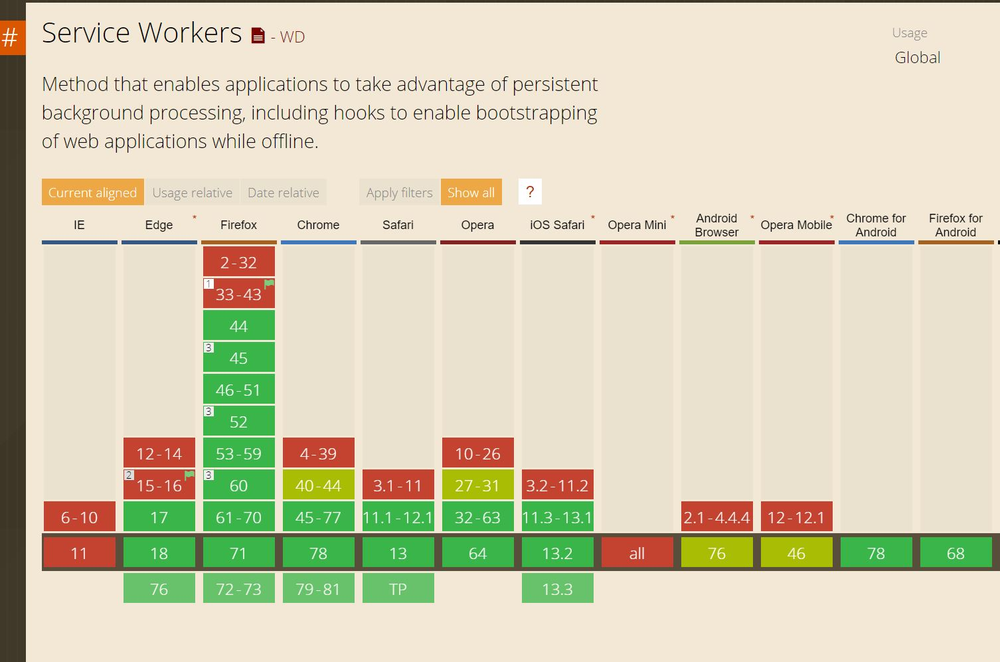
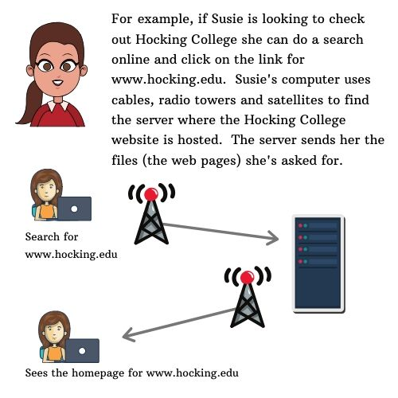
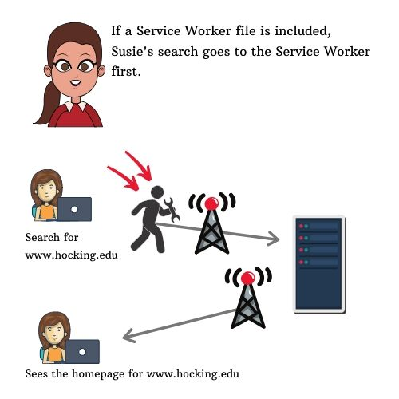
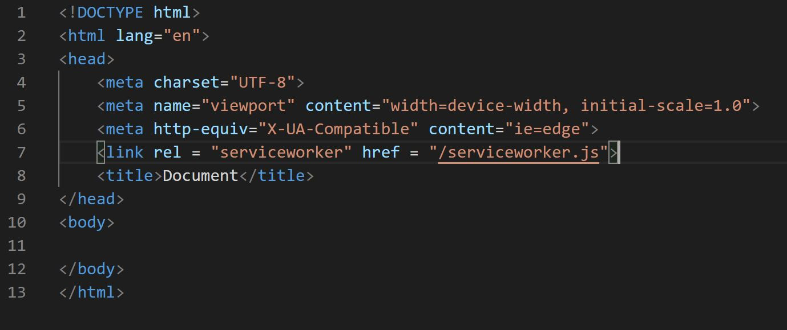
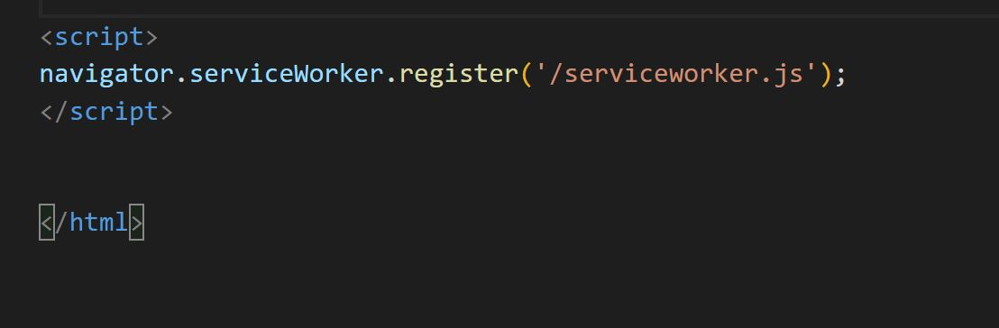

Service Workers
- Make working offline possible
- Are a JavaScript file
- Unlike other JavaScript files, service workers don't interact with the DOM (Document Object Manager)
- Even though cannot access the DOM, service workers have access to the fundamental innter workings of a browser
- Leave instructions for the browser that will be excecuted before the request from the user is sent
- The difference between service worker files and other JavaScript files is that other JavaScript files are executed after it's been downloaded from the server. With service workers, the file is executed before anything else happens.
- Services workers tell the browser "If user asks for this particular URL, run this JavaScript file first." This is why service workers don't access the DOM. It can't manipulate the DOM if there's no documents yet.
- There are two policies that website must follow for service workers to work.
- Service Worker file must come from the same origin. If your website is www.hocking.edu your service worker has to be from the same folders the website is on. You can't use another service (AWS S3 storage for example) to host the files on.
- The website has to be secured with HTTPS protocol - not HTTP
Browser Support
- The client (user agent) is the browser.
- The browser is a piece of software that acts on behalf of the user
- Just like anything else, browser support of service workers can vary so resources like caniuse.com is a great way to check which browsers support service workers 
- The client (user agent) must first visit the website before the service worker is installed
- If the client's browser supports service workers - that's great! If the browser doesn't support it - no big deal, the client will just ignore the file and go on accessing the website through normal methods.
The above image is the support as of December 31, 2019.
Below is a diagram showing how a user makes a request from the user agent (their computer). You'll see that it goes through infrastructure (cables, towers, satellites) to the web server for the website they are trying to access.
 Full slideshow at Service Workers and Their Role in AppsIf a service worker is used, the request from the user goes to Service Worker before going to the infrastructure of cables, towers and satellites to go to the website. The request from the user agent (computer) sees the Service Worker file and stops and waits for further instructions.
Full slideshow at Service Workers and Their Role in AppsRegistering Service Workers
Registering a Service Worker
- Create a JavaScript file named serviceworker.js
- The file serviceworker.js must be in same folder as the website.
- The file serviceworker.js should be stored in the root directory and not in any subfolders in the website
- The customer/client computer must visit the website so that the serviceworker.js file is downloaded to their computer for future visits to the website.
- During future visits to the website, the the browser is told "See that service worker script. Install it please."
Registration Code Elements
- Registration can be done via a link element in the head section or declare service workers using JavaScript.
- If the code is in the head of the HTML document and the browser doesn't support it, it's just ignored - no harm, no foul.
- If the code is inserted via JavaScript code the browser freaks out and throw an error message.
Below image is showing element inserted in the head section
Below image is showing script inserted at the bottom of the HTML file
Feature Detection
Feature Detection
- To prevent errors from happening when calling upon service worker we can first ask the browser if the feature exists - this is feature detection
- Feature detection can be applied to almost anything available in JavaScript
Property Test
Property Test
- With Feature Detction, the browser checks for existance of property called serviceWorker that belongs to the navigate object
- If it is an older browser that does not support navigator.serviceWorker it comes back as undefined because there's no property "serviceWorker".
- If it is a newer browser that does have navigator.serviceWorker which means it's supported
Scope
Scope
- The URL syntax will define the scope of the service worker
- By default the scope is based on where put the service worker in the script. This is why the file should be in the root directory to cover all the files within the website.
Promises
Promises
- When a browser is accessing a website for the first time, it takes a few moments for the website to come through. This is because the browser is doing the following:
- Verifying if the site is running on HTTPS or localhost
- Check if the service worker script is on the same domain as the current site
- The browser will try to fetch the service worker script and read through it
- The process doesn't take long but we want to avoid the browser freezing while performing these tasks so we execute the register method asynchronously. While this is great - what if we want to provide more instructions after all the processing is done? That's where promises come in
- Promise is an object with a built-in method then
- The function we put in the then method will only execute when the promise has finished all the tasks and thereform the "the promise has been fulfilled"
- If something is rejected in the promise does not work and the "promise is not fulfilled" there is a corresponding method called the catch method.
- In the catch method we can put a function to perform if the "promise is not fulfilled"